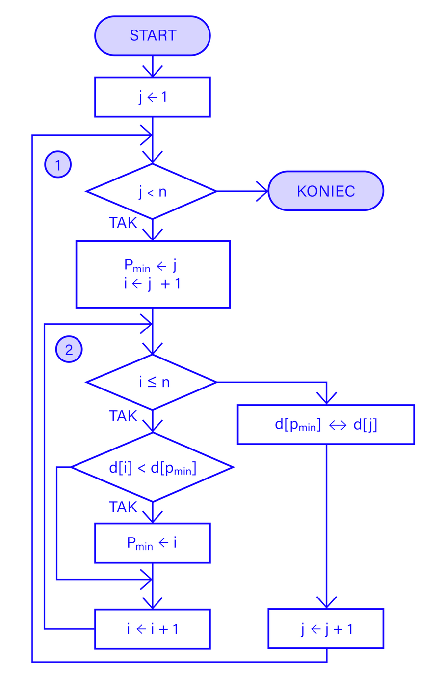

1. Przejdź przez cały zestaw danych, porównując sąsiednie elementy.
2. Jeśli sąsiadujące ze sobą elementy są w złej kolejności (np. element poprzedni jest większy od następnego), zamień je miejscami.
3. Powtórz krok 1 dla wszystkich pozostałych elementów, aż dotrzesz do ostatniej pary elementów.
4. Po zakończeniu pierwszej iteracji największy element powinien znaleźć się na końcu kolekcji.
5. Powtórz kroki 1-4 dla n-1 elementów, gdzie n jest rozmiarem kolekcji.
6. Po zakończeniu wszystkich iteracji, cała kolekcja powinna być uporządkowana rosnąco.
public class SortowanieBabelkowe {
static void sortowanieBabelkowe(int[] zbior) {
int rozmiar = zbior.length;
for (int i = 0; i < rozmiar - 1; i++) {
for (int j = 0; j < rozmiar - 1 - i; j++) {
if (zbior[j] > zbior[j + 1]) {
int temp = zbior[j];
zbior[j] = zbior[j + 1];
zbior[j + 1] = temp;
}
}
}
}
public static void main(String[] args) {
int[] zbior = {7, 2, 1, 6, 8, 5, 3, 4};
sortowanieBabelkowe(zbior);
System.out.print("Posortowany zbior: ");
for (int i = 0; i < zbior.length; i++) {
System.out.print(zbior[i] + " ");
}
}
}
Schemat blokowy
